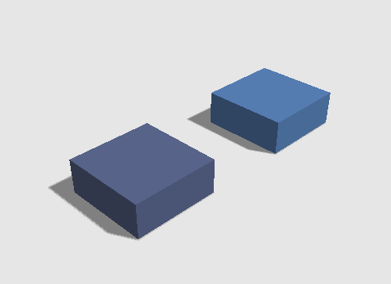
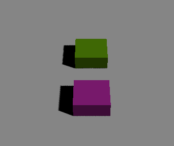
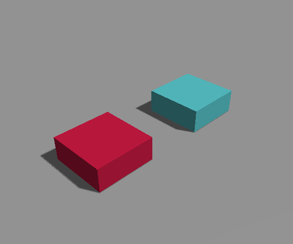
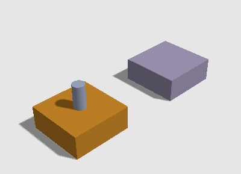

微信跳一跳小游戏实战开发(三) - 场景创建，相机和灯光调整

发布于
准备工作做之后，这一步先进行简单的场景创建，创建完简单的场景之后，调整相机位置以及灯光。
从之前的generateObject函数中拷贝一部分代码下来进行修改，然后写了一个创建立方体的函数如下：
var bottle,cubes = [];
function createCube(x,z){
var wx = 5,
wy = 2,
wz = 5;
var cube = new THREE.Mesh(new THREE.BoxGeometry(wx, wy, wz, 1, 1, 1), createObjectMaterial());
var cube_shape = new Ammo.btBoxShape(new Ammo.btVector3(wx * 0.5, wy * 0.5, wz * 0.5));
cube_shape.setMargin(1);
//设置物体的坐标
cube.position.set(x, wy/2, z);
//质量
var mass = 1;
var localInertia = new Ammo.btVector3(0, 0, 0); //惯性
cube_shape.calculateLocalInertia(mass, localInertia);
var transform = new Ammo.btTransform();
transform.setIdentity();
var pos = cube.position;
transform.setOrigin(new Ammo.btVector3(pos.x, pos.y, pos.z));
var motionState = new Ammo.btDefaultMotionState(transform);
var rbInfo = new Ammo.btRigidBodyConstructionInfo(mass, motionState, cube_shape, localInertia);
var body = new Ammo.btRigidBody(rbInfo);
cube.userData.physicsBody = body; //把ammo创建的刚体放在three.js3D对象的userData里边
cube.receiveShadow = true;
cube.castShadow = true;
scene.add(cube); //
cubes.push(cube); //放入数组中
physicsWorld.addRigidBody(body); //将物体加入物理世界中进行模拟
return cube;
}
然后刷新网页之后看到：

颜色太深阴影太重，相机位置也需要进行调整
于是把径向光的透明度调低，然后增加了一个环境光
camera的位置也设置成从一个角往中心点看
调整后如下：

地面的颜色太重了
原来的代码中是这样设置的：
var groundMaterial = new THREE.MeshPhongMaterial({ color: 0xC7C7C7 });
我把后面的0xc7c7c7代码改成了0xffffff，效果如下：
灯光啥的差不多就先这样。
然后准备一个圆柱体来模拟瓶子。放在方块上面。然后测试测试在不同边缘位置的物理效果。
模型的颜色是随机生成的，所以每次刷新都会有不同的颜色。放上圆柱体效果如下。

经过多次测试，给圆柱体一个向上和向前的速度时，经常会有立不稳的情况。于是看了一下微信的原版跳一跳，发现它的下落时是垂直的。由此我认为整个跳起的过程不需要物理引擎来参与，当圆柱体快落地的时候再让物理引擎介入。
先把当前版本的代码贴出来，然后再进行下一步开发。
<!DOCTYPE html>
<html lang="zh-cn">
<head>
<meta charset="utf-8" />
<meta name="renderer" content="webkit">
<meta http-equiv="X-UA-Compatible" content="IE=edge">
<title>微信跳一跳小游戏-Demo</title>
<meta name="viewport" content="width=device-width, user-scalable=no, minimum-scale=1.0, maximum-scale=1.0">
<meta name="description" content="" />
<meta name="keywords" content="微信跳一跳小游戏" />
<meta name="author" content="shawn" />
<meta name="copyright" content="shawn.com" />
<link rel="stylesheet" href="/css/lib/font-awesome/font-awesome.min.css">
<link rel="stylesheet" href="/css/layout.css" />
<link rel="stylesheet" href="/css/demo/tiao_yi_tiao.css" />
</head>
<body>
<div id="js-main" class="game-main">
<div id="js-game"></div>
</div>
<script src="/js/lib/threejs/three.min.js"></script>
<script src="/js/lib/threejs/ammo.js"></script>
<script src="/js/lib/threejs/OrbitControls.js"></script>
<script src="/js/lib/threejs/Detector.js"></script>
<script src="/js/lib/threejs/stats.min.js"></script>
<script>
var game_div = document.getElementById('js-game');
// Detects webgl
// 检测浏览器是否支持webgl
if (!Detector.webgl) {
Detector.addGetWebGLMessage({
parent: game_div
});
}
// Heightfield parameters
// 这里terrain开头的是表示那个波浪形的地形的配置参数
var terrainWidthExtents = 100; //宽
var terrainDepthExtents = 100; //深
var terrainWidth = 128; //对宽的网格进行细分
var terrainDepth = 128; //网格细分等级
var terrainHalfWidth = terrainWidth / 2;
var terrainHalfDepth = terrainDepth / 2;
var terrainMaxHeight = 8; //这里是调节地形波浪的峰值
var terrainMinHeight = 0; //这里是地形波浪的谷值
// Graphics variables
// three.js中的变量
var container, stats;
var camera, controls, scene, renderer;
var terrainMesh, texture;
var clock = new THREE.Clock();
// Physics variables
// 物理引擎的变量
var collisionConfiguration; // new ammo.btDefaultCollisionConfiguration()
var dispatcher; //new Ammo.btCollisionDispatcher(collisionConfiguration);
var broadphase; //暂时不知道啥作用
var solver; //负责解算
// 最后上面这四个对象创建一个 Ammojs的物理世界
var physicsWorld; //new Ammo.btDiscreteDynamicsWorld(dispatcher, broadphase, solver, collisionConfiguration);
var terrainBody;
var dynamicObjects = []; //把three.js创建的3D对象放在这个数组里边，每次render之前，把Object3D对象的位置和朝向信息从物理刚体对象里边拷贝过来。
var transformAux1 = new Ammo.btTransform();
var heightData = null;
var ammoHeightData = null;
var time = 0;
var objectTimePeriod = 3; //3秒的间隔
var timeNextSpawn = time + objectTimePeriod; //物品生成的时间间隔
var maxNumObjects = 30; //这里是设置最大的物品生成数量
function init() {
// 用于生成波浪形的高程数据
heightData = generateHeight(terrainWidth, terrainDepth, terrainMinHeight, terrainMaxHeight);
initGraphics();
initPhysics();
}
// 这个函数里边主要是对three.js的变量进行初始化
// 场景创建，渲染器，摄像头，地面模型等
// 这里我轻车熟路所以打少一点注释
function initGraphics() {
container = game_div;
renderer = new THREE.WebGLRenderer();
renderer.setPixelRatio(window.devicePixelRatio);
renderer.setSize(window.innerWidth, window.innerHeight);
renderer.shadowMap.enabled = true;
container.innerHTML = "";
container.appendChild(renderer.domElement);
stats = new Stats(); //这里是网页左上角显示帧率系统状态等的插件
stats.domElement.style.position = 'absolute';
stats.domElement.style.top = '0px';
container.appendChild(stats.domElement);
// THREEJS有几种的相机 PerspectiveCamera这个是透视摄像机
// 跳一跳里边很明显是用的 OrthographicCamera(正交相机)
camera = new THREE.PerspectiveCamera(60, window.innerWidth / window.innerHeight, 0.2, 2000);
//camera = new THREE.OrthographicCamera(60, window.innerWidth / window.innerHeight, 0.2, 2000);
scene = new THREE.Scene();
scene.background = new THREE.Color(0xbfd1e5);
//camera.position.y = terrainDepthExtents;
//camera.position.z = terrainDepthExtents;
camera.position.set(100,100,100);
camera.lookAt(new THREE.Vector3(0, 0, 0));
controls = new THREE.OrbitControls(camera); //相机控制器
//创建一个平面的模型
var geometry = new THREE.PlaneBufferGeometry(terrainWidthExtents, terrainDepthExtents, terrainWidth - 1, terrainDepth - 1);
geometry.rotateX(-Math.PI / 2);
//然后对这个平面模型的点的高度进行调节 假如这里高度不调节，那么将会显示成一个平面
var vertices = geometry.attributes.position.array;
for (var i = 0, j = 0, l = vertices.length; i < l; i++ , j += 3) {
// j + 1 because it is the y component that we modify
vertices[j + 1] = heightData[i];
}
//调节完这个平面的点的高度之后，对这个BufferGeometry的顶点法线重新计算一下
geometry.computeVertexNormals();
var groundMaterial = new THREE.MeshPhongMaterial({ color: 0xffffff });
terrainMesh = new THREE.Mesh(geometry, groundMaterial);
terrainMesh.receiveShadow = true;
terrainMesh.castShadow = true;
scene.add(terrainMesh);
// var textureLoader = new THREE.TextureLoader();
// textureLoader.load("textures/grid.png", function (texture) {
// texture.wrapS = THREE.RepeatWrapping;
// texture.wrapT = THREE.RepeatWrapping;
// texture.repeat.set(terrainWidth - 1, terrainDepth - 1);
// groundMaterial.map = texture;
// groundMaterial.needsUpdate = true;
// });
var amblight = new THREE.AmbientLight(0xffffff, 0.5); // soft white light
scene.add( amblight );
// 径向光
var light = new THREE.DirectionalLight(0xffffff, 0.5);
light.position.set(100, 150, -50);
light.castShadow = true; //产生阴影
var dLight = 200;
var sLight = dLight * 0.25;
light.shadow.camera.left = -sLight;
light.shadow.camera.right = sLight;
light.shadow.camera.top = sLight;
light.shadow.camera.bottom = -sLight;
light.shadow.camera.near = dLight / 30;
light.shadow.camera.far = dLight;
light.shadow.mapSize.x = 1024 * 2;
light.shadow.mapSize.y = 1024 * 2;
scene.add(light);
window.addEventListener('resize', onWindowResize, false);
}
function onWindowResize() {
camera.aspect = window.innerWidth / window.innerHeight;
camera.updateProjectionMatrix();
renderer.setSize(window.innerWidth, window.innerHeight);
}
function initPhysics() {
// Physics configuration
// 创建和配置物理世界
collisionConfiguration = new Ammo.btDefaultCollisionConfiguration();
dispatcher = new Ammo.btCollisionDispatcher(collisionConfiguration);
broadphase = new Ammo.btDbvtBroadphase();
solver = new Ammo.btSequentialImpulseConstraintSolver();
physicsWorld = new Ammo.btDiscreteDynamicsWorld(dispatcher, broadphase, solver, collisionConfiguration);
physicsWorld.setGravity(new Ammo.btVector3(0, -6, 0)); //设置重力系数
// Create the terrain body
// 创建
var groundShape = this.createTerrainShape(heightData);
var groundTransform = new Ammo.btTransform();
groundTransform.setIdentity();
// Shifts the terrain, since bullet re-centers it on its bounding box.
groundTransform.setOrigin(new Ammo.btVector3(0, (terrainMaxHeight + terrainMinHeight) / 2, 0));
var groundMass = 0; //质量 质量设置成0就可以不会掉落了
var groundLocalInertia = new Ammo.btVector3(0, 0, 0); //惯性
var groundMotionState = new Ammo.btDefaultMotionState(groundTransform); //运动状态 大概是动量
var groundBody = new Ammo.btRigidBody(new Ammo.btRigidBodyConstructionInfo(groundMass, groundMotionState, groundShape, groundLocalInertia));
physicsWorld.addRigidBody(groundBody);
}
//用户产生波浪形的高程数据
function generateHeight(width, depth, minHeight, maxHeight) {
// Generates the height data (a sinus wave)
var size = width * depth;
var data = new Float32Array(size);
var hRange = maxHeight - minHeight;
var w2 = width / 2;
var d2 = depth / 2;
var phaseMult = 12;
var p = 0;
for (var j = 0; j < depth; j++) {
for (var i = 0; i < width; i++) {
var radius = Math.sqrt(
Math.pow((i - w2) / w2, 2.0) +
Math.pow((j - d2) / d2, 2.0));
var height = 0; // (Math.sin(radius * phaseMult) + 1) * 0.5 * hRange + minHeight;
data[p] = height;
p++;
}
}
return data;
}
function createTerrainShape() {
// This parameter is not really used, since we are using PHY_FLOAT height data type and hence it is ignored
var heightScale = 1;
// Up axis = 0 for X, 1 for Y, 2 for Z. Normally 1 = Y is used.
var upAxis = 1;
// hdt, height data type. "PHY_FLOAT" is used. Possible values are "PHY_FLOAT", "PHY_UCHAR", "PHY_SHORT"
var hdt = "PHY_FLOAT";
// Set this to your needs (inverts the triangles)
var flipQuadEdges = false;
// Creates height data buffer in Ammo heap
ammoHeightData = Ammo._malloc(4 * terrainWidth * terrainDepth);
// Copy the javascript height data array to the Ammo one.
var p = 0;
var p2 = 0;
for (var j = 0; j < terrainDepth; j++) {
for (var i = 0; i < terrainWidth; i++) {
// write 32-bit float data to memory
Ammo.HEAPF32[ammoHeightData + p2 >> 2] = heightData[p];
p++;
// 4 bytes/float
p2 += 4;
}
}
// Creates the heightfield physics shape
var heightFieldShape = new Ammo.btHeightfieldTerrainShape(
terrainWidth,
terrainDepth,
ammoHeightData,
heightScale,
terrainMinHeight,
terrainMaxHeight,
upAxis,
hdt,
flipQuadEdges
);
// Set horizontal scale
var scaleX = terrainWidthExtents / (terrainWidth - 1);
var scaleZ = terrainDepthExtents / (terrainDepth - 1);
heightFieldShape.setLocalScaling(new Ammo.btVector3(scaleX, 1, scaleZ));
heightFieldShape.setMargin(0.05);
return heightFieldShape;
}
// 随机生成一个物品从场景的高处掉落
function generateObject() {
var numTypes = 4;
var objectType = Math.ceil(Math.random() * numTypes);
var threeObject = null;
var shape = null;
var objectSize = 3;
var margin = 0.05;
switch (objectType) {
case 1:
// Sphere
var radius = 1 + Math.random() * objectSize;
threeObject = new THREE.Mesh(new THREE.SphereGeometry(radius, 20, 20), createObjectMaterial());
shape = new Ammo.btSphereShape(radius);
shape.setMargin(margin);
break;
case 2:
// Box
var sx = 1 + Math.random() * objectSize;
var sy = 1 + Math.random() * objectSize;
var sz = 1 + Math.random() * objectSize;
threeObject = new THREE.Mesh(new THREE.BoxGeometry(sx, sy, sz, 1, 1, 1), createObjectMaterial());
shape = new Ammo.btBoxShape(new Ammo.btVector3(sx * 0.5, sy * 0.5, sz * 0.5));
shape.setMargin(margin);
break;
case 3:
// Cylinder
var radius = 1 + Math.random() * objectSize;
var height = 1 + Math.random() * objectSize;
threeObject = new THREE.Mesh(new THREE.CylinderGeometry(radius, radius, height, 20, 1), createObjectMaterial());
shape = new Ammo.btCylinderShape(new Ammo.btVector3(radius, height * 0.5, radius));
shape.setMargin(margin);
break;
default:
// Cone
var radius = 1 + Math.random() * objectSize;
var height = 2 + Math.random() * objectSize;
threeObject = new THREE.Mesh(new THREE.CylinderGeometry(0, radius, height, 20, 2), createObjectMaterial());
shape = new Ammo.btConeShape(radius, height);
break;
}
//设置物体的坐标
threeObject.position.set((Math.random() - 0.5) * terrainWidth * 0.6, terrainMaxHeight + objectSize + 2, (Math.random() - 0.5) * terrainDepth * 0.6);
//质量
var mass = objectSize * 5;
var localInertia = new Ammo.btVector3(0, 0, 0); //惯性
shape.calculateLocalInertia(mass, localInertia); //应该是把shape对象里边的一些参数计算一下，比方说计算一下质量的倒数，惯性的倒数 在需要的时候不用每一次的计算了
var transform = new Ammo.btTransform();
transform.setIdentity();
var pos = threeObject.position;
transform.setOrigin(new Ammo.btVector3(pos.x, pos.y, pos.z));
var motionState = new Ammo.btDefaultMotionState(transform);
var rbInfo = new Ammo.btRigidBodyConstructionInfo(mass, motionState, shape, localInertia);
var body = new Ammo.btRigidBody(rbInfo);
threeObject.userData.physicsBody = body; //把ammo创建的刚体放在three.js3D对象的userData里边
threeObject.receiveShadow = true;
threeObject.castShadow = true;
scene.add(threeObject); //
dynamicObjects.push(threeObject); //放入数组中
physicsWorld.addRigidBody(body); //将物体加入物理世界中进行模拟
}
function createObjectMaterial() {
var c = Math.floor(Math.random() * (1 << 24));
return new THREE.MeshPhongMaterial({ color: c });
}
function animate() {
requestAnimationFrame(animate);
render();
stats.update(); //这个是更新网页左上角那个显示帧率等信息的stats对象
}
function render() {
var deltaTime = clock.getDelta();
// deltaTime 大概是16-17毫秒 但是是以秒为单位的
// 注释掉 不让其产生新的对象
// if (dynamicObjects.length < maxNumObjects && time > timeNextSpawn) { //当数量没超过最大设置数量 同时 时间间隔大于3秒
// generateObject(); //创建一个对象
// timeNextSpawn = time + objectTimePeriod; //设置下一次的添加时间
// }
updatePhysics(deltaTime); //进行物理场景模拟 同时把模拟数据同步到three.js的场景中
renderer.render(scene, camera); //渲染器把场景渲染到画布上
time += deltaTime;
}
function updatePhysics(deltaTime) {
//进行仿真模拟
// 参数10应该是运算时插入的中间帧
physicsWorld.stepSimulation(deltaTime, 10);
// // Update objects
// for (var i = 0, il = dynamicObjects.length; i < il; i++) {
// var objThree = dynamicObjects[i];
// var objPhys = objThree.userData.physicsBody;
// var ms = objPhys.getMotionState();
// if (ms) {
// ms.getWorldTransform(transformAux1);
// var p = transformAux1.getOrigin(); //物体的原点
// var q = transformAux1.getRotation(); //物体的朝向
// objThree.position.set(p.x(), p.y(), p.z()); //更新物体的位置
// objThree.quaternion.set(q.x(), q.y(), q.z(), q.w()); //四元数组可以设置物体的朝向
// }
// }
for (var i = 0, il = cubes.length; i < il; i++) {
var objThree = cubes[i];
var objPhys = objThree.userData.physicsBody;
var ms = objPhys.getMotionState();
if (ms) {
ms.getWorldTransform(transformAux1);
var p = transformAux1.getOrigin(); //物体的原点
var q = transformAux1.getRotation(); //物体的朝向
objThree.position.set(p.x(), p.y(), p.z()); //更新物体的位置
objThree.quaternion.set(q.x(), q.y(), q.z(), q.w()); //四元数组可以设置物体的朝向
}
}
}
var bottle,cubes = [];
function createCube(x,z){
var wx = 5,
wy = 2,
wz = 5;
var cube = new THREE.Mesh(new THREE.BoxGeometry(wx, wy, wz, 1, 1, 1), createObjectMaterial());
var cube_shape = new Ammo.btBoxShape(new Ammo.btVector3(wx * 0.5, wy * 0.5, wz * 0.5));
cube_shape.setMargin(0.05);
//设置物体的坐标
cube.position.set(x, wy/2, z);
//质量
var mass = 0;
var localInertia = new Ammo.btVector3(0, 0, 0); //惯性
cube_shape.calculateLocalInertia(mass, localInertia); //应该是把shape对象里边的一些参数计算一下，比方说计算一下质量的倒数，惯性的倒数 在需要的时候不用每一次的计算了
var transform = new Ammo.btTransform();
transform.setIdentity();
var pos = cube.position;
transform.setOrigin(new Ammo.btVector3(pos.x, pos.y, pos.z));
var motionState = new Ammo.btDefaultMotionState(transform);
var rbInfo = new Ammo.btRigidBodyConstructionInfo(mass, motionState, cube_shape, localInertia);
var body = new Ammo.btRigidBody(rbInfo);
cube.userData.physicsBody = body; //把ammo创建的刚体放在three.js3D对象的userData里边
cube.receiveShadow = true;
cube.castShadow = true;
scene.add(cube); //
cubes.push(cube); //放入数组中
physicsWorld.addRigidBody(body); //将物体加入物理世界中进行模拟
return cube;
}
function createBottle(x,z){
var radius = 0.5,
height = 2;
var bottle = new THREE.Mesh(new THREE.CylinderGeometry(radius, radius, height, 20, 1), createObjectMaterial());
var bottle_shape = new Ammo.btCylinderShape(new Ammo.btVector3(radius, height * 0.5, radius));
bottle_shape.setMargin(0.05);
//设置物体的坐标
bottle.position.set(x, 4, z);
//质量
var mass = 1;
var localInertia = new Ammo.btVector3(0, 0, 0); //惯性
bottle_shape.calculateLocalInertia(mass, localInertia); //应该是把shape对象里边的一些参数计算一下，比方说计算一下质量的倒数，惯性的倒数 在需要的时候不用每一次的计算了
var transform = new Ammo.btTransform();
transform.setIdentity();
var pos = bottle.position;
transform.setOrigin(new Ammo.btVector3(pos.x, pos.y, pos.z));
var motionState = new Ammo.btDefaultMotionState(transform);
var rbInfo = new Ammo.btRigidBodyConstructionInfo(mass, motionState, bottle_shape, localInertia);
var body = new Ammo.btRigidBody(rbInfo);
bottle.userData.physicsBody = body; //把ammo创建的刚体放在three.js3D对象的userData里边
bottle.receiveShadow = true;
bottle.castShadow = true;
scene.add(bottle); //
cubes.push(bottle); //放入数组中
physicsWorld.addRigidBody(body); //将物体加入物理世界中进行模拟
return bottle;
}
function initGameScene(){
createCube(0,0);
createCube(0,-10);
//创建瓶子
bottle = createBottle(0,0);
window.bottleP = bottle.userData.physicsBody;
bottleP.setActivationState( 4 );
//bottleP.setLinearVelocity(new Ammo.btVector3(0,3,3))
//bottleP.setAngularVelocity(new Ammo.btVector3(8,0,10))
camera.position.set(20,20,15);
}
// - Main code -
init();
initGameScene();
animate();
</script>
</body>
</html>
评论
或 匿名发表评论